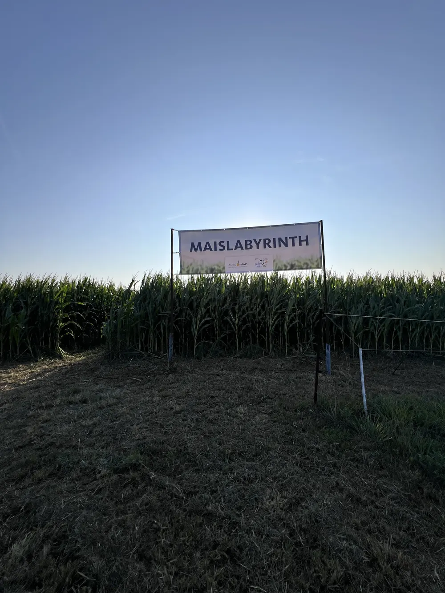

- Startseite
- Hof erleben
Erlebnishof in Schmargendorf
Kommt vorbei! Die Kälbchen warten schon.
Auf unserem Hof erlebt ihr, wo eure Milch herkommt. Mit Hofcafé, Milchladen, Hofführungen, Spielbereich, Maislabyrinth und viel Uckermark drumherum.



Auf einen Blick
Der Hemme-Hof in Schmargendorf bei Angermünde liegt im Biosphärenreservat Schorfheide-Chorin. Besucher finden dort Hofcafé und Milchladen, Hofführungen, einen kostenfreien Erlebnishof für Familien, ein Maislabyrinth im Sommer und die KuhCam. Mit Bahn und Bus ist der Hof von Berlin aus erreichbar.
- Hofcafé und Milchladen, 11 bis 18 Uhr
- Mi bis So
- Spielbereich, Rundweg, Archehof
- Kostenfrei
- Maislabyrinth im Spätsommer
- 4 Hektar
- ab Berlin Hauptbahnhof
- RE3 + Bus
Hofcafé & Milchladen
Ihr wollt mehr über die frischen Hemme-Produkte und ihre Entstehung erfahren? Vielleicht sogar Gunnar Hemme auf einen zwanglosen Plausch treffen? Dann kommt in unser Hofcafé.
Hier genießt ihr in Ruhe Milchspezialitäten, Kaffee und Kuchen mit Blick auf die Uckermark. Mit etwas Glück schaut ihr den Kühen beim Grasen auf der nahen Weide zu, und eure Kinder können ein Kälbchen streicheln. Im Sommer sitzt ihr im Sommergarten des gläsernen Milchcafés.
Bevor ihr nach Hause fahrt, nehmt im Milchladen alle Hemme-Produkte frisch für zuhause mit, dazu Lebensmittel von regionalen Erzeugern.
Mittwoch bis Sonntag, 11 bis 18 Uhr

Hofführungen
Werft einen Blick hinter unsere Ku(h)lissen und seht, wo eure Milch herkommt, von unseren Kühen bis zur Molkerei.
Für alle
Ohne Voranmeldung. Jeden 1. Sonntag im Monat von April bis Oktober, um 14:30 Uhr. Danach genießt ihr im Hofcafé Uckermärker Spezialitäten.
Ohne Anmeldung14:30 UhrFür Gruppen
Mit Voranmeldung, bis zu 30 Personen, Dienstag bis Freitag ab 10:30 Uhr. Mit Verkostung unserer frischen Milchprodukte, auf Wunsch auch Kuchen, Kaffee und Tee.
Bis 30 PersonenDi bis FrFür Kinder
Mit Voranmeldung, bis zu 30 Kinder, Montag bis Freitag ab 8 Uhr. Jedes Kind bekommt ein Milchgetränk nach Wahl.
Bis 30 KinderMo bis Fr
Anmeldung und Terminanfragen beim Milchtelefon: 03331 252525, Montag bis Freitag, 8 bis 15 Uhr.
Der Erlebnishof für Familien
Wir sind ein beliebtes Ausflugsziel für Familien an Wochenenden und in den Ferien geworden. Darauf richten wir uns aus.

Maislabyrinth
Vier Hektar Mais, drei Meter hoch, mit Quiz-Stationen und einem Hochsitz als Aussichtsturm. Das Wegenetz wird schon bei der Aussaat per GPS und digitaler Aussaatkarte angelegt.

Spielen und Toben
- Outdoor-Spielbereich mit Matschküche
- Buddelberg und Heu-Stall
- Aussichtsturm
- Sprunghügel, ein Riesen-Hüpfball

Rundweg, Archehof und Bauerngarten
Alte Haustierrassen auf dem Archehof und alte Sorten im Bauerngarten zum Kennenlernen, Schnuppern und Naschen.
„Das Hauptziel des Erlebnishofes ist es, Menschen einzuladen, moderne Landwirtschaft und regionale Wertschöpfung und gesunde Kreisläufe vor Ort zu erleben“, sagt Gunnar Hemme. Alle Angebote auf dem Erlebnishof sind kostenfrei.
So entsteht das Maislabyrinth
Das Labyrinth wird nicht nachträglich ins Feld geschnitten, sondern schon bei der Aussaat geplant. Mit Unterstützung der FarmBlick GmbH und der Agromais GmbH entsteht das Wegesystem über eine digitale Aussaatkarte direkt beim Pflanzen. 2025 zeigte es aus der Luft eine riesige Kuh mit dem Schriftzug „Hemme“, 2026 einen großen Mähdrescher. An den Stationen gibt es ein Quiz mit wechselnden Fragen, die Fragebögen bekommt ihr vor Ort.
KuhCam: unsere heimlichen Stars
Mit unserer KuhCam lasst ihr den Blick über unseren Hof wandern und beobachtet unsere Kühe auf der Weide und im Stall. Das Wohl unserer Tiere liegt uns am Herzen, davon könnt ihr euch hier selbst überzeugen.
Zwischen Mai und Oktober sind die Kühe auf der Weide. Oder ihr besucht sie direkt auf dem Hof.

Natur rund um den Hof
Buchenwald Grumsin
Ausgebildete Landschaftsführer begleiten euch durch das eiszeitlich geprägte UNESCO-Weltnaturerbe: „Ein Urwald entsteht“ und „Lebendiges Welterbe“ entlang des Wildnispfads.
WelterbeBus Grumsin
Von April bis Oktober mehrmals täglich zu Tierpark Angermünde, Hemme-Hof, Zuchenberg, Luisenhof mit Künstleratelier und Altkünkendorf. Am Wochenende ab 9:40 Uhr, unter der Woche ab 10:40 Uhr.
Altstadt Angermünde
Verbindet euren Besuch mit einem Ausflug in die historische Altstadt. Touren und Ausflugsziele bei angermuende-tourismus.de.
Von unserem Hof in der Uckermark starten nicht nur unsere frischen Milchprodukte ihre Reise. Sehen, schmecken und riechen: Erlebt die Natur mit allen Sinnen, zu Fuß oder mit dem Rad, und genießt den guten Geschmack der Region.
Öffnungszeiten & Anfahrt
Hofcafé & Milchladen
Mittwoch bis Sonntag, 11 bis 18 Uhr
Hemme Milch GmbH & Co. KG
Heideweg 4
16278 Angermünde, OT Schmargendorf
Mit Bahn und Bus
RE3 ab Berlin Hauptbahnhof Richtung Stralsund oder Schwedt bis Angermünde. Von dort fährt von April bis Oktober der WelterbeBus bis zur Haltestelle „Hemme Milch Schmargendorf“.
Oder ihr bucht bis 60 Minuten vor Abfahrt einen Rufbus der Uckermärkischen Verkehrsgesellschaft.
Fragen zum Hofbesuch
Wann hat das Hofcafé geöffnet?
Hofcafé und Milchladen haben Mittwoch bis Sonntag von 11 bis 18 Uhr geöffnet.
Kostet der Erlebnishof Eintritt?
Nein, die Angebote auf dem Erlebnishof wie Spielbereich, Rundweg, Archehof und Bauerngarten sind kostenfrei.
Muss ich mich für eine Hofführung anmelden?
Für die offene Hofführung am 1. Sonntag im Monat nicht. Gruppen und Kinder melden sich vorher beim Milchtelefon an, 03331 252525, Montag bis Freitag von 8 bis 15 Uhr.
Wie komme ich ohne Auto zum Hof?
Mit dem RE3 ab Berlin Hauptbahnhof bis Angermünde und von dort von April bis Oktober mit dem WelterbeBus bis zur Haltestelle „Hemme Milch Schmargendorf“. Alternativ fährt ein Rufbus der UVG, buchbar bis 60 Minuten vor Abfahrt.
Kann ich die Kühe auch online sehen?
Ja, über unsere KuhCam schaut ihr live in Stall und auf die Weide. Zwischen Mai und Oktober stehen die Kühe auf der Weide.
Was ist das Maislabyrinth?
Ein begehbares Labyrinth auf vier Hektar Maisfeld mit drei Meter hohen Pflanzen, Quiz-Stationen und einem Hochsitz als Aussichtsturm. Das Wegenetz wird schon bei der Aussaat per GPS angelegt. Es ist im Spätsommer geöffnet.